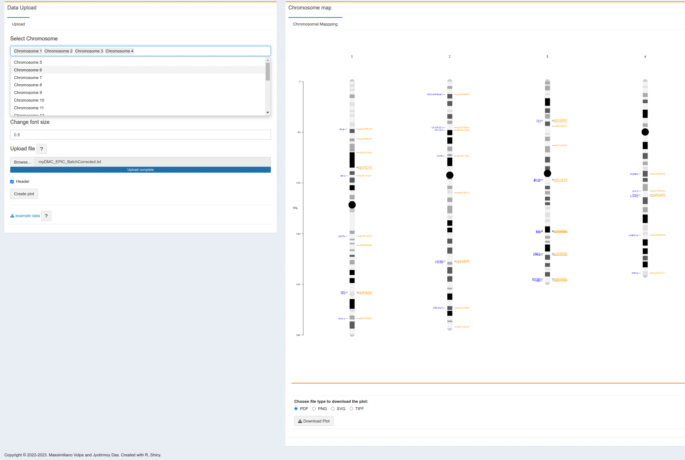

6 Chromosome plot
Chromosome plot is a way to visualize coordinates at DMC positions over the chromosome structure. In methylR, Users can change the cut-off for adjusted p-value as well as the fold change value. It is possible to visualize one chromosome at a time or all the chromosomes on the same figure.
6.1 How to use
6.1.1 Data upload & Parameters setup
6.1.1.1 Data upload
- User needs to upload a text (tab-delimited) file with adjusted p-values and logFC values. At present, user can use the DMCs data file directly generated from the main analysis (See Chapter 1).
- To setup the adjusted p-value, user can change the cut-off. Default is setup to 0.05.
- LogFC cut-off can also be changed as per user requirement. Default is 0.3.
- After the file upload and setting up the cut-off for adjusted p-value and logFC, click the “Create plot” button.
- After creating the plot, if the user needs to add more chromosomes to the plot, please add the chromosome number from the “Select Chromosome” drop-down list and the plot will be updated automatically (do not need to click “Create plot” again.) and the same will hapeen if the user wants to remove one chromosome from the figure, just *DELETE it from the “Select Chromosome” drop-down menu.
- “Change font size” will also updated automatically after the figure generation. Just change the font size as desired (max. 2).
6.2 Analysis result
6.2.1 Chromosome plot
- The figure will be generated as soon as the computation finishes and it will allow you to vary the font size on the flow.
- User can download the plot as a static figure (PDF, PNG, SVG, TIFF).

In the Chromosome plot, the blue text (e.g. FAAH ) in the left side is the gene symbol and the orange in the right side is the CpG ID from Illumina annotation (e.g. cg20099409 ). Please note, CpGs without the gene symbol only shows the CpG ID on the right side.
- On the right tab, user can also see the volcano data table which is useful when they are using the full dataset from the main analysis (See Chapter 1 ).
6.3 R packages
TO ALL OUR USERS, IF YOU ARE EXPERIENCING ANY TROUBLE WITH THE APP, BEFORE SENDING THE BUG REPORT, PLEASE RESTART THE DOCKER CONTAINER AND TRY AGAIN.↩︎
Copyright © 2022-2023. Massimiliano Volpe and Jyotirmoy Das.